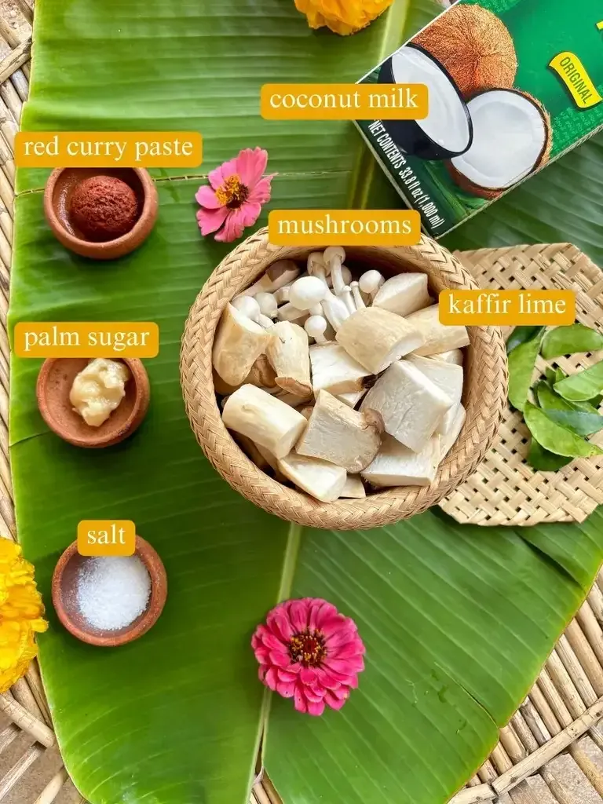
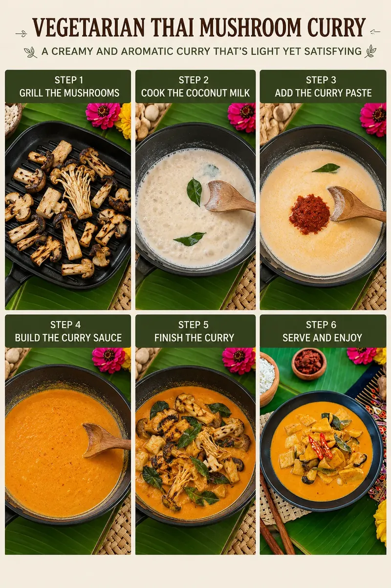

Vegetarian Thai Mushroom Curry
A Creamy and Aromatic Curry That's Light Yet Satisfying
Vegetarian Thai Mushroom Curry is a quick and comforting dish made with tender mushrooms simmered in a rich and creamy red coconut curry sauce. Packed with warm Thai flavors, this recipe is perfect for busy weeknights when you want something delicious, wholesome, and easy to prepare.
“A creamy and aromatic curry that's light yet satisfying.”
The combination of coconut milk, red curry paste, and kaffir lime leaves creates a fragrant and flavorful sauce that pairs beautifully with mushrooms. From king oyster and shiitake to enoki and button mushrooms, you can mix and match your favorites to create different textures and flavors in every bite.
One of the best things about this curry is how flexible it is. You can easily add leftover vegetables, leafy greens, or pantry ingredients to make it your own. Served with steamed jasmine rice, this creamy Thai curry becomes a cozy and satisfying meal full of bold flavor.
- Prep Time: 15 mins
- Cook Time: 20 mins
- Total Time: 35 mins
- Serves: 2–3

Ingredients

- 2½ cups mushrooms, sliced
(king oyster, portobello, chestnut, shiitake, button, or enoki mushrooms) - 1¼ cups full-fat coconut milk
- 1 tablespoon red curry paste
- ½ tablespoon palm sugar
- 1 teaspoon salt
- 4 kaffir lime leaves, stems removed
Optional Additions
- Baby spinach or bok choy
- Bell peppers
- Broccoli
- Zucchini
- Jasmine rice, for serving
Step-by-Step Recipe

Step 1: Grill the Mushrooms
Heat a grill pan over low-medium heat. Place the sliced mushrooms directly onto the dry pan without oil. Cook them for a few minutes on each side until lightly grilled and slightly golden. This helps deepen their flavor and texture.
Step 2: Cook the Coconut Milk
Pour half of the coconut milk into a wok or deep pan and cook over medium heat. Let it simmer until the coconut oil begins separating slightly from the milk.
Step 3: Add the Curry Paste
Stir in the red curry paste and mix thoroughly with the coconut milk until smooth and fragrant.
Step 4: Build the Curry Sauce
Pour in the remaining coconut milk and stir well. Add palm sugar and salt, then continue cooking until the sugar fully dissolves into the sauce.
Step 5: Finish the Curry
Add the grilled mushrooms and kaffir lime leaves to the curry. Let everything simmer gently for a few minutes so the mushrooms absorb the rich Thai flavors.
Step 6: Serve and Enjoy
Turn off the heat and serve the curry hot with steamed jasmine rice. Garnish with fresh herbs or chili flakes if desired for extra flavor.
Enjoy this warm and creamy Vegetarian Thai Mushroom Curry as a quick dinner or comforting homemade meal packed with aromatic Thai-inspired flavors.